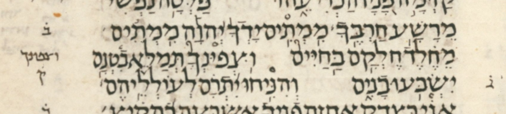
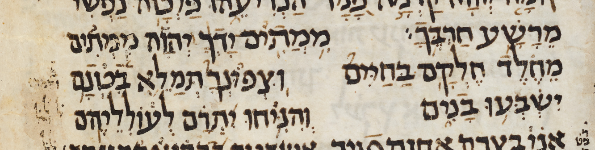

This page lists the 15 poetic (Three Books) WLC 4.22 verses the PLY accent grammar cannot parse cleanly (13 missing-silluq, 2 NO_PARSE). Use the filter below to narrow the list.
Each verse falls into one of two documented kinds:
Each verse shows its pointed-Hebrew text (the verse-final word highlighted for missing-silluq cases), its Michigan-Claremont source body, and — for missing-silluq verses — a SAT focus-word table comparing the WLC focus word against its UXLC and MAM-simple readings. The per-verse summary is mechanically auto-derived — but from a word-by-word alignment of the two verses, not from the conjunctive-stripped skeletons above, so a divider that merely sits on a different word is reported as such rather than as a phantom substitution. It is labelled tentative — not a hand-vetted attribution. See doc/PLAN-poetic-accent-grammar.md for the full taxonomy.
🔗 Kind: NO_PARSE (hierarchy-violating L anomaly).
Auto-derived summary (tentative): WLC and MAM-simple read the same disjunctive skeleton, yet the verse does not parse — the anomaly is structural, not a WLC/MAM divergence.
ממת֥ים ידך֨׀ יהו֡ה ממת֬ים מח֗לד חלק֥ם בחיים֮ וצפונך֮ תמל֪א ב֫טנ֥ם ישבע֥ו בנ֑ים והנ֥יחו י֝תר֗ם לעולליהֽם׃
MI75/M:TI71YM YFD/:KF6305 Y:HWF83H MI75/M:TI64YM M"/XE81LED XEL:Q/F71M B.A75/XAY.IYM02 *W/CPYN/K **W.75/C:PW.N/:KF02 T.:MAL."93) BI60+:N/F71M YI&:B.:(71W. BFNI92YM W:/HIN.I71YXW. 11YIT:R/F81M L:/(OWL:L"Y/HE95M00
| 0 | no_parse | |||||||||||||||
| MERKHA | LEGARMEH | PAZER | ILLUY | REVIA_GADOL | MERKHA | TSINNOR | TSINNOR | GALGAL | OLEH_WEYORED ← stalled here | MERKHA | ATNAX | MERKHA | REVIA_MUGRASH | SILLUQ | ERROR | |
This verse is heavily commented upon by MAM (see the translation of those notes), but the comments either do not concern cantillation, or concern cantillation only in ways that would not change whatever the checker's issue is with the accent grammar of the verse. (The four notes turn on a secondary merkha plus ga'ya, a ḥataf, a missing shva, and the placement of the silluq -- none of which alters the disjunctive skeleton the parser rejects, and the conjunctive servus chain the grammar does parse is permissive enough that a secondary conjunctive is absorbed harmlessly.)
This verse is not extant in the Aleppo Codex.
Though in the LC the first of the two tsinnor marks is a little oddly shaped, S1 (Sassoon 1053) clearly shares these two adjacent tsinnor marks, with no questions of penmanship.
A scan of the disjunctive accent stream of every poetic verse finds that these two adjacent tsinnor marks are unique in the Three Books: of the 250 poetic verses carrying at least one tsinnor, Ps 17:14 is the only one in which two tsinnor occur consecutively. Both arise from genuine Michigan-Claremont 02 (tsinnor) codes -- not a swallowed 82 (tsinnorit) -- on adjacent words: בַּחַיִּים and the qere וּצְפוּנְךָ.


🔗 Kind: Missing silluq (ERROR-leaf recovery).
Auto-derived summary (tentative): Word-aligned against MAM-simple, on אדם, WLC reads no divider (a conjunctive) where MAM reads silluq.
מ֤ה רב־ טובך֮ אשר־ צפ֪נת ליר֫א֥יך פ֭עלת לחס֣ים ב֑ך נ֝֗גד בנ֣י אדם׃
MF70H RA75B-+W.B/:KF02 ):A$ER-CFPA93N:T.F L.I75/YR"60)E71Y/KF 13P.F(AL:T.F LA/XOSI74YM B./F92K: 11NE81GED B.:N"74Y )FDFM00]1
| אדם׃ | ]1 | sof_pasuq | wlc_focus |
| אדֽם׃ | silluq-sof_pasuq | diff_wlc_mam |
| 0 | slqc | |||||
| 1 | oleh_weyoredc | slqc | ||||
| 2 | sinnorp | oleh_weyoredp | atnc | slqc | ||
| 3 | dehip | atnp | rev_mugrashp | slqp | ||
| mehuppak sinnor | galgal oleh we-yored | dehi | munah atnah | rev mugrash | ERROR | |
🔗 Kind: Missing silluq (ERROR-leaf recovery).
Auto-derived summary (tentative): Word-aligned against MAM-simple, on רמיה, WLC reads no divider (a conjunctive) where MAM reads silluq.
א֥שרי אד֗ם ל֤א יחש֬ב יהו֣ה ל֣ו עו֑ן וא֖ין ברוח֣ו רמיה׃
)A71$:75R"Y )FDF81M LO70) YAX:$O64B Y:HWF74H L/O74W (FWO92N W:/)"73YN B.:/RW.X/O74W R:MIY.FH00]1
| רמיה׃ | ]1 | sof_pasuq | wlc_focus |
| רמיֽה׃ | silluq-sof_pasuq | diff_wlc_mam |
| 0 | slqc | ||
| 1 | atnc | slqp | |
| 2 | rev_gadolp | atnp | |
| merka rev gadol | mehuppak illuy munah munah atnah | ERROR | |
🔗 Kind: Missing silluq (ERROR-leaf recovery).
Auto-derived summary (tentative): Word-aligned against MAM-simple, on אשריו, WLC reads no divider (a conjunctive) where MAM reads silluq.
תור֣ת אלה֣יו בלב֑ו ל֖א תמע֣ד אשריו׃
T.OWRA74T ):ELOHF74Y/W B.:/LIB./O92W LO73) TIM:(A74D ):A$URFY/W00]c
| אשריו׃ | ]c | sof_pasuq | wlc_focus |
| אשרֽיו׃ | silluq-sof_pasuq | diff_wlc_mam |
| 0 | slqc | |
| 1 | atnp | slqp |
| munah munah atnah | ERROR | |
🔗 Kind: Missing silluq (ERROR-leaf recovery).
Auto-derived summary (tentative): Word-aligned against MAM-simple, on להמיתו, WLC reads no divider (a conjunctive) where MAM reads silluq.
צופ֣ה ר֭שע לצד֑יק ו֝מבק֗ש להמיתו׃
COWPE74H 13RF$F( LA/C.AD.I92YQ 11W./M:BAQ."81$ LA/H:AMIYT/OW00]1
| להמיתו׃ | ]1 | sof_pasuq | wlc_focus |
| להמיתֽו׃ | silluq-sof_pasuq | diff_wlc_mam |
| 0 | slqc | |||
| 1 | atnc | slqc | ||
| 2 | dehip | atnp | rev_mugrashp | slqp |
| munah dehi | atnah | rev mugrash | ERROR | |
🔗 Kind: Missing silluq (ERROR-leaf recovery).
Auto-derived summary (tentative): Word-aligned against MAM-simple, WLC segments this stretch as ירוצון where MAM has ירצון; on וראה, WLC reads no divider (a conjunctive) where MAM reads silluq.
בלי־ ע֭ון ירוצ֣ון ויכונ֑נו ע֖ורה לקראת֣י וראה׃
B.:75LIY-13(FWON Y:RW.C74W./N W:/YIK.OWNF92NW. (73W.R/FH LI/Q:RF)T/I74Y W./R:)"H00]1
| וראה׃ | ]1 | sof_pasuq | wlc_focus |
| וראֽה׃ | silluq-sof_pasuq | diff_wlc_mam |
| 0 | slqc | ||
| 1 | atnc | slqp | |
| 2 | dehip | atnp | |
| dehi | munah atnah | ERROR | |
🔗 Kind: Missing silluq (ERROR-leaf recovery).
Auto-derived summary (tentative): Word-aligned against MAM-simple, on אדם, WLC reads no divider (a conjunctive) where MAM reads silluq.
הבה־ ל֣נו עזר֣ת מצ֑ר ו֝ש֗וא תשוע֥ת אדם׃
HF75B/FH-L./F74NW. (EZ:RF74T MI/C.F92R 11W:/$F81W:) T.:$W.(A71T )FDFM00]1
| אדם׃ | ]1 | sof_pasuq | wlc_focus |
| אדֽם׃ | silluq-sof_pasuq | diff_wlc_mam |
| 0 | slqc | ||
| 1 | atnp | slqc | |
| 2 | rev_mugrashp | slqp | |
| munah munah atnah | rev mugrash | ERROR | |
🔗 Kind: Missing silluq (ERROR-leaf recovery).
Auto-derived summary (tentative): Word-aligned against MAM-simple, on וחומץ, WLC reads no divider (a conjunctive) where MAM reads silluq.
אלה֗י פ֭לטני מי֣ד רש֑ע מכ֖ף מעו֣ל וחומץ׃
):E35LOH/A81Y 13P.AL.:+/"NIY MI/Y.A74D RF$F92( MI/K.A73P M:(AW."74L W:/XOWM"C00]1
| וחומץ׃ | ]1 | sof_pasuq | wlc_focus |
| וחומֽץ׃ | silluq-sof_pasuq | diff_wlc_mam |
| 0 | slqc | |||
| 1 | atnc | slqp | ||
| 2 | rev_gadolp | atnc | ||
| 3 | dehip | atnp | ||
| rev gadol | dehi | munah atnah | ERROR | |
🔗 Kind: Missing silluq (ERROR-leaf recovery).
Auto-derived summary (tentative): Word-aligned against MAM-simple, on יצרתם, WLC reads no divider (a conjunctive) where MAM reads silluq.
את֣ה ה֭צבת כל־ גבול֣ות א֑רץ ק֥יץ ו֝ח֗רף את֥ה יצרתם׃
)AT.F74H 13HIC.AB:T.F K.FL-G.:BW.LO74WT )F92REC QA71YIC 11WF/XO81REP )AT.F71H Y:CAR:T.F/M00]1
| יצרתם׃ | ]1 | sof_pasuq | wlc_focus |
| יצרתֽם׃ | silluq-sof_pasuq | diff_wlc_mam |
| 0 | slqc | |||
| 1 | atnc | slqc | ||
| 2 | dehip | atnp | rev_mugrashp | slqp |
| munah dehi | munah atnah | merka rev mugrash | ERROR | |
🔗 Kind: Missing silluq (ERROR-leaf recovery).
Auto-derived summary (tentative): Word-aligned against MAM-simple, on התוו, WLC reads no divider (a conjunctive) where MAM reads silluq.
ויש֣ובו וינס֣ו א֑ל וקד֖וש ישרא֣ל התוו׃
WA/Y.F$74W.BW. WA/Y:NAS.74W. )"92L W./Q:DO73W$ YI&:RF)"74L HIT:WW.00]1
| התוו׃ | ]1 | sof_pasuq | wlc_focus |
| התוֽו׃ | silluq-sof_pasuq | diff_wlc_mam |
| 0 | slqc | |
| 1 | atnp | slqp |
| munah munah atnah | ERROR | |
🔗 Kind: Missing silluq (ERROR-leaf recovery).
Auto-derived summary (tentative): Word-aligned against MAM-simple, on אלים, WLC reads no divider (a conjunctive) where MAM reads silluq.
כ֤י מ֣י ב֭שחק יער֣ך ליהו֑ה ידמ֥ה ל֝יהו֗ה בבנ֥י אלים׃
K.I70Y MI74Y 13BA/$.AXAQ YA(:ARO74K: LA/YHWF92H YID:ME71H 11LA/YHWF81H B.I/B:N"71Y )"LIYM00]1
| אלים׃ | ]1 | sof_pasuq | wlc_focus |
| אלֽים׃ | silluq-sof_pasuq | diff_wlc_mam |
| 0 | slqc | |||
| 1 | atnc | slqc | ||
| 2 | dehip | atnp | rev_mugrashp | slqp |
| mehuppak munah dehi | munah atnah | merka rev mugrash | ERROR | |
🔗 Kind: Missing silluq (ERROR-leaf recovery).
Auto-derived summary (tentative): Word-aligned against MAM-simple, on מחתה, WLC reads no divider (a conjunctive) where MAM reads silluq.
פר֥צת כל־ גדרת֑יו ש֖מת מבצר֣יו מחתה׃
P.FRA71C:T.F KFL-G.:D"ROTF92Y/W &A73M:T.F MIB:CFRF74Y/W M:XIT.FH00]1
| מחתה׃ | ]1 | sof_pasuq | wlc_focus |
| מחתֽה׃ | silluq-sof_pasuq | diff_wlc_mam |
| 0 | slqc | |
| 1 | atnp | slqp |
| merka atnah | ERROR | |
🔗 Kind: Missing silluq (ERROR-leaf recovery).
Auto-derived summary (tentative): Word-aligned against MAM-simple, on תהום, WLC reads no divider (a conjunctive) where MAM reads silluq.
באמצ֣ו שחק֣ים ממ֑על ב֝עז֗וז עינ֥ות תהום׃
B.:/)AM.:C/O74W $:XFQI74YM MI/M.F92(AL 11B.A/(:AZO81WZ (IYNO71WT T.:HOWM00]U
| תהום׃ | ]U | sof_pasuq | wlc_focus |
| תהֽום׃ | silluq-sof_pasuq | diff_wlc_mam |
| 0 | slqc | ||
| 1 | atnp | slqc | |
| 2 | rev_mugrashp | slqp | |
| munah munah atnah | rev mugrash | ERROR | |
🔗 Kind: Missing silluq (ERROR-leaf recovery).
Auto-derived summary (tentative): Word-aligned against MAM-simple, on רבצו, WLC reads no divider (a conjunctive) where MAM reads silluq.
אל־ תאר֣ב ר֭שע לנו֣ה צד֑יק אל־ תשד֥ד רבצו׃
)AL-T.E):ERO74B 13RF$F( LI/N:W"74H CAD.I92YQ )A75L-T.:$AD."71D RIB:C/OW00]Q]c]n
| רבצו׃ | ]Q]c]n | sof_pasuq | wlc_focus |
| רבצֽו׃ | silluq-sof_pasuq | diff_wlc_mam |
| 0 | slqc | ||
| 1 | atnc | slqp | |
| 2 | dehip | atnp | |
| munah dehi | munah atnah | ERROR | |
🔗 Kind: NO_PARSE (hierarchy-violating L anomaly). Summary: On the verse-initial word, WLC transcribes a malformed mark — absent from MAM (and from BHL) — that the UXLC note page (linked above) flags with a transcription-uncertainty marker.
Mwd | UXLC | UXLC note page
Auto-derived summary (tentative): Word-aligned against MAM-simple, on הלא־בבטן, WLC reads revia mugrash, dexi where MAM reads dexi.
ה֝לא־ ב֭בטן עש֣ני עש֑הו ו֝יכנ֗נו בר֥חם אחֽד׃
11H:A35/LO)-13BA/B.E+EN (O&/"74NIY (F&/F92HW. 11WA/Y:KUN/E81N.W. B.F/RE71XEM )EXF75D00
| 0 | no_parse | |||||||
| REVIA_MUGRASH | DEXI | MUNAX | ATNAX ← stalled here | REVIA_MUGRASH | MERKHA | SILLUQ | ERROR | |
The UXLC note for this verse describes the mark WLC transcribes here as a geresh muqdam of “a very odd shape,” a vertical straight line arising from the top front of the he, and flags it with a transcription-uncertainty “t” marker; BHL lacks the geresh muqdam entirely.
In my opinion, to transcribe this mark at all is uncharitable. To continue to transcribe it with the benefit of the high-resolution color images now available seems not just uncharitable but aggressively uncharitable, almost absurd.